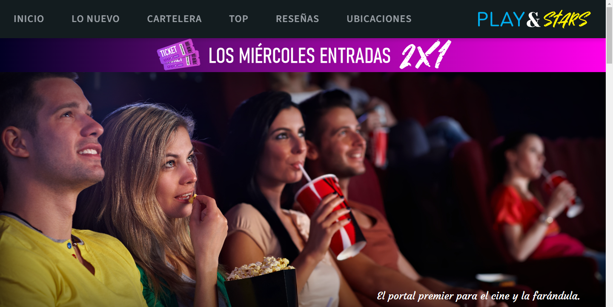
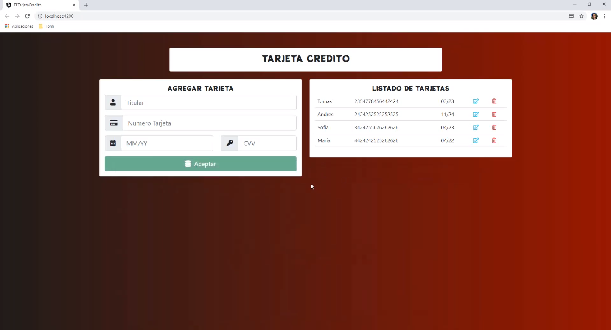

Hola.
Soy Mario López Ramonet y este es mi sitio personal
que mantendré al día con información acerca de mí, trayectoria
profesional, proyectos, vías de contacto, entre otras cosillas.
En el encabezado podrás navegar a las distintas secciones de la
página rápidamente.
Ahora que estás aquí, te invito a que tomes un vistazo.
¡Bienvenido!
Sobre mí
Soy un ingeniero de software Full-Stack con un alto sentido de la responsabilidad.
Desde chico he tenido una mente curiosa y un gusto por devorar lo último en tecnología.
Me apasiona la colaboración y el intercambio de ideas, y me encanta trabajar junto a
otros para crear proyectos que tengan alto impacto en las personas.
Actualmente estoy estudiando en la Universidad de Sonora, y muy próximamente
seré egresado titulado de la carrera en Ingeniería en Sistemas de Información.
En mis ratos libres, me gusta contribuir en varios proyectos de código abierto,
depurando, reportando bugs y subiendo pull requests. Puedes leer más acerca de
estos proyectos la sección de proyectos.
Siempre estoy en busca de una posición desafiante y gratificante dentro del ramo
de las tecnologías de la información. Si tienes un reto adecuado para mí, checa la
sección de contacto donde encontarás mi correo y redes sociales.
Habilidades
Soft Skills
- Alto sentido de responsabilidad
- Iniciativa de liderazgo
- Comunicación constante
- Autoaprendizaje continuo
- Pasión por adoptar nuevas tecnologías
- Dominio rápido
- Detallista
- Idiomas: Español e Inglés (100%)
- Metodologías SCRUM, Agile
Desarrollo Web
- HTML + CSS
- Bootstrap
- Tailwind
- SASS / LESS
- Javascript
- Typescript
- APIs CRUD & REST
- .NET Core
- ASP.NET
- Node
- PHP
- jQuery
- Angular
- Vue.js
- Svelte
- Flutter
- Nginx
- Apache
- LINQ
- SQL Server
- MySQL
- Postgres
- Unit & E2E testing
- Cypress
- Selenium
Otros
- Git
- CI/CD
- Azure DevOps
- Jira
- Trello
- Figma
- Photoshop
- Illustrator
- CorelDraw
- C#
- C / C++
- Python
- Java
- VMWare
- VirtualBox
- Docker
- Kubernetes
- Windows
- Linux
- Android
Experiencia laboral
Becario en Dirección de Apoyo a Estudiantes
Universidad de Sonora
Hermosillo, Sonora
Sep 2023 - Actual
Líder técnico de equipo especializado en la digitalización, capturación, archivado y concentrado de información de registros históricos de resultados CENEVAL, trabajando en un nuevo módulo con credenciales para el acceso centralizado de estos registros.
Full-stack Developer
AD Sistemas Soluciones en TI
Hermosillo, Sonora
Nov 2022 - May 2023 · 7 meses
Trabajé en módulos de reporte de ventas y almacén así como mapas para su sistema ERP modular para PyMES. Tareas de implementación, soporte, optimización de rendimiento (queries y tiempos de carga), mantenimiento e implementación de APIs REST/CRUD.
Especialista de datos / Diseñador
Intercom Online Inc.
New York, NY (remoto)
Mar 2019 - Mar 2020 · 1 año
Análisis, minería y parseo de datos de distintos sitios web para la elaboración de un motor de búsqueda para doctores de la medicina alternativa, además de diseños de la marca, elaborado de maquetas, etc.
Proyectos
Play&Stars
Esta página es un proyecto ficticio desarrollado en HTML, CSS y Javascript como parte de la clase de Desarrollo de Frontend 2023-2 en la Universidad de Sonora.
Características:
- Navegación interactiva por anclaje y efectos de desplazamiento suave.
- Diseño atractivo y profesional con enfoque en la usabilidad.
- Diseño responsive para adaptarse a diferentes dispositivos.
Tecnologías: HTML, CSS, Javascript (ES6).
Tarjeta de Crédito
Esta página fue una práctica que desarrollé para aprender a usar Angular y .NET Core.
Características:
- Guardado, Lectura, Edición y Eliminado de datos (CRUD).
- Forms reactivos.
- Validación de campos.